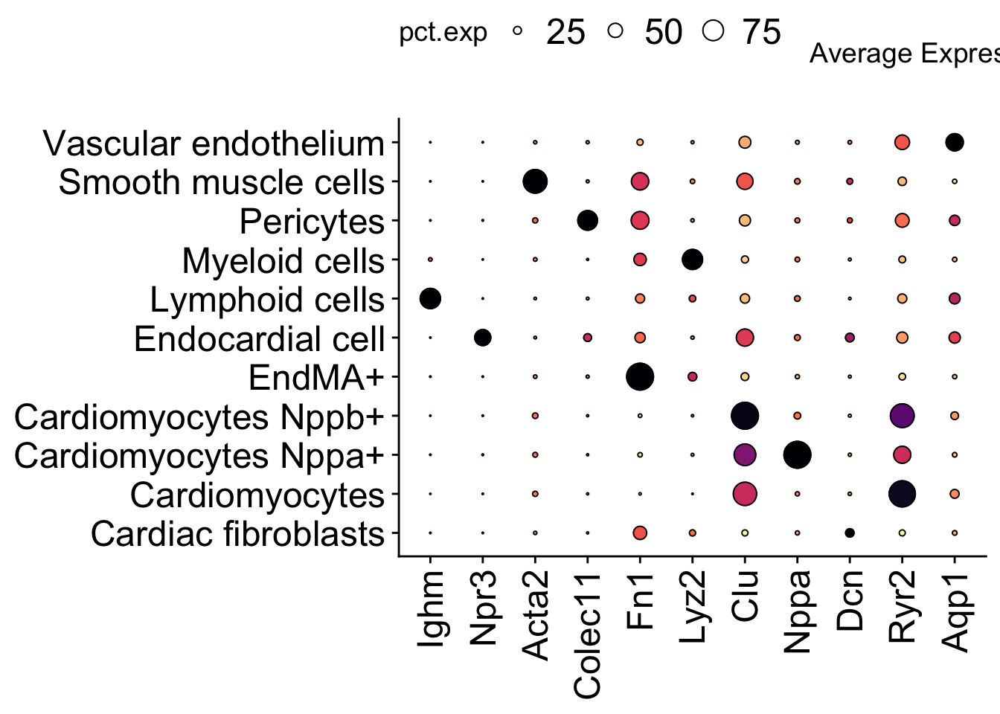

molkart.Figure1
FloWuenne
2023-08-11
Last updated: 2023-08-24
Checks: 6 1
Knit directory: mi_spatialomics/
This reproducible R Markdown analysis was created with workflowr (version 1.7.0). The Checks tab describes the reproducibility checks that were applied when the results were created. The Past versions tab lists the development history.
The R Markdown is untracked by Git. To know which version of the R
Markdown file created these results, you’ll want to first commit it to
the Git repo. If you’re still working on the analysis, you can ignore
this warning. When you’re finished, you can run
wflow_publish to commit the R Markdown file and build the
HTML.
Great job! The global environment was empty. Objects defined in the global environment can affect the analysis in your R Markdown file in unknown ways. For reproduciblity it’s best to always run the code in an empty environment.
The command set.seed(20230612) was run prior to running
the code in the R Markdown file. Setting a seed ensures that any results
that rely on randomness, e.g. subsampling or permutations, are
reproducible.
Great job! Recording the operating system, R version, and package versions is critical for reproducibility.
Nice! There were no cached chunks for this analysis, so you can be confident that you successfully produced the results during this run.
Great job! Using relative paths to the files within your workflowr project makes it easier to run your code on other machines.
Great! You are using Git for version control. Tracking code development and connecting the code version to the results is critical for reproducibility.
The results in this page were generated with repository version e8204f0. See the Past versions tab to see a history of the changes made to the R Markdown and HTML files.
Note that you need to be careful to ensure that all relevant files for
the analysis have been committed to Git prior to generating the results
(you can use wflow_publish or
wflow_git_commit). workflowr only checks the R Markdown
file, but you know if there are other scripts or data files that it
depends on. Below is the status of the Git repository when the results
were generated:
Ignored files:
Ignored: .DS_Store
Ignored: .Rhistory
Ignored: .Rproj.user/
Ignored: analysis/.DS_Store
Ignored: analysis/deprecated/.DS_Store
Ignored: data/.DS_Store
Ignored: data/140623.calcagno_et_al.seurat_object.rds
Ignored: data/molkart_tissue_regions_rois/.DS_Store
Ignored: figures/.DS_Store
Ignored: omnipathr-log/
Ignored: output/.DS_Store
Ignored: output/figure3.pixie_cell_cluster_heatmap.png
Ignored: output/figure3.pixie_pixel_cluster_heatmap.png
Ignored: output/figure3.pixie_pixel_cluster_heatmap.tiff
Ignored: output/harmony.molkart.h5Seurat
Ignored: output/lunaphore_images/
Ignored: output/mol_cart/
Ignored: output/proteomics/
Ignored: output/seqIF/
Ignored: plots/.DS_Store
Ignored: plots/Figure1.umap_plot.pdf
Ignored: references/.DS_Store
Ignored: renv/.DS_Store
Ignored: renv/library/
Ignored: renv/staging/
Untracked files:
Untracked: analysis/__pycache__/
Untracked: analysis/deprecated/molkart.quantify_cells_in_regions.ipynb
Untracked: analysis/deprecated/napari_points.ipynb
Untracked: analysis/deprecated/roi.csv
Untracked: analysis/deprecated/roi2.csv
Untracked: analysis/deprecated/test_construct_spatialdata.ipynb
Untracked: analysis/figures.deep_visual_proteomics.Rmd
Untracked: analysis/mol_cart.QC_spots.Rmd
Untracked: analysis/mol_cart.molkart.Figure1.Rmd
Untracked: analysis/mol_cart.molkart.process_quantifications_seurat.Rmd
Untracked: analysis/molecular_cartography_python/
Untracked: analysis/seqIF.heatmaps_pixie.figure3.Rmd
Untracked: analysis/seqIF_python/
Untracked: analysis/spatialMI_functions.py
Untracked: data/Calcagno2022_int_logNorm_annot.h5Seurat
Untracked: data/pixie.cell_table_size_normalized_cell_labels.csv
Untracked: plots/Figure3.cell_types_overtimes.pdf
Untracked: plots/Figure3.pixel_clusters_overtimes.pdf
Untracked: references/mol_cart.heart_regions/
Unstaged changes:
Modified: .gitignore
Modified: analysis/data_analysis.Rmd
Modified: analysis/data_processing.Rmd
Modified: analysis/figures.Rmd
Deleted: analysis/figures.figure_5.Rmd
Modified: analysis/figures.supplementary_figure_X.proteomics_qc.Rmd
Deleted: analysis/molkart.Figure1.Rmd
Deleted: analysis/molkart.QC_spots.Rmd
Deleted: analysis/molkart.process_quantifications_seurat.Rmd
Modified: analysis/proteomics.bulk_de_analysis.Rmd
Modified: analysis/proteomics.filter_proteomic_data.Rmd
Modified: analysis/proteomics.pathway_enrichment_analysis.Rmd
Modified: analysis/proteomics.scRNAseq_comparison.Rmd
Deleted: analysis/python/lunaphore.figure_3.create_pixie_images.ipynb
Deleted: analysis/python/lunaphore.figure_3.pixie_heatmaps.ipynb
Deleted: analysis/python/molkart.count_spots_on_tissue.ipynb
Deleted: analysis/python/molkart.plot_MC_spots.ipynb
Deleted: analysis/python/molkart.plot_spots_figure1.ipynb
Deleted: analysis/python/molkart.quantify_cells_in_regions.ipynb
Deleted: analysis/python/napari_points.ipynb
Deleted: analysis/python/roi.csv
Deleted: analysis/python/roi2.csv
Deleted: analysis/python/spatialMI_functions.py
Deleted: analysis/python/test_construct_spatialdata.ipynb
Deleted: data/molkart.spots_per_tissue.tsv
Modified: figures/Figure_5.eps
Modified: figures/Figure_5.pdf
Modified: figures/Figure_5.png
Modified: figures/Figure_5.svg
Modified: output/molcart.misty_celltype_table.tsv
Deleted: output/molkart_segmentation_images/sample_control_r1_s1.DAPI_WGA.crop.png
Deleted: output/molkart_segmentation_images/sample_control_r1_s1.DAPI_WGA.crop.scale.png
Deleted: output/molkart_segmentation_images/sample_control_r1_s1.DAPI_WGA.roi.tif
Deleted: output/molkart_segmentation_images/sample_control_r1_s1.DAPI_WGA.tif
Deleted: output/molkart_segmentation_images/sample_control_r1_s1.DAPI_WGA_roi.crop.png
Deleted: output/molkart_segmentation_images/sample_control_r1_s1.DAPI_WGA_roi.crop.scale.png
Deleted: output/molkart_segmentation_images/sample_control_r1_s1.cellpose_full_image.outline.tif
Deleted: output/molkart_segmentation_images/sample_control_r1_s1.cellpose_full_image.roi.outline.tif
Deleted: output/molkart_segmentation_images/sample_control_r1_s1.cellpose_full_image.roi.tif
Deleted: output/molkart_segmentation_images/sample_control_r1_s1.cellpose_full_image.tif
Deleted: output/molkart_segmentation_images/sample_control_r1_s1.cellpose_mask.crop.png
Deleted: output/molkart_segmentation_images/sample_control_r1_s1.cellpose_mask.crop.scale.png
Deleted: output/molkart_segmentation_images/sample_control_r1_s1.cellpose_mask_roi.crop.png
Deleted: output/molkart_segmentation_images/sample_control_r1_s1.cellpose_mask_roi.crop.scale.png
Deleted: output/proteomics.filt_imputed_proteins.tsv
Deleted: output/proteomics.filtered_proteins.tsv
Deleted: output/proteomics.pca_res.rds
Deleted: output/proteomics.protein_missing_stats.tsv
Deleted: output/proteomics.vsn_norm_proteins.tsv
Modified: plots/Figure1.dotplot.pdf
Note that any generated files, e.g. HTML, png, CSS, etc., are not included in this status report because it is ok for generated content to have uncommitted changes.
There are no past versions. Publish this analysis with
wflow_publish() to start tracking its development.
Introduction
library(tidyverse)── Attaching core tidyverse packages ──────────────────────── tidyverse 2.0.0 ──
✔ dplyr 1.1.2 ✔ readr 2.1.4
✔ forcats 1.0.0 ✔ stringr 1.5.0
✔ ggplot2 3.4.2 ✔ tibble 3.2.1
✔ lubridate 1.9.2 ✔ tidyr 1.3.0
✔ purrr 1.0.1
── Conflicts ────────────────────────────────────────── tidyverse_conflicts() ──
✖ dplyr::filter() masks stats::filter()
✖ dplyr::lag() masks stats::lag()
ℹ Use the conflicted package (<http://conflicted.r-lib.org/>) to force all conflicts to become errorslibrary(cowplot)
Attaching package: 'cowplot'
The following object is masked from 'package:lubridate':
stamplibrary(Seurat)Loading required package: SeuratObject
Loading required package: sp
The legacy packages maptools, rgdal, and rgeos, underpinning the sp package,
which was just loaded, will retire in October 2023.
Please refer to R-spatial evolution reports for details, especially
https://r-spatial.org/r/2023/05/15/evolution4.html.
It may be desirable to make the sf package available;
package maintainers should consider adding sf to Suggests:.
The sp package is now running under evolution status 2
(status 2 uses the sf package in place of rgdal)
Attaching package: 'SeuratObject'
The following objects are masked from 'package:base':
intersect, saveRDS
Loading Seurat v5 beta version
To maintain compatibility with previous workflows, new Seurat objects will use the previous object structure by default
To use new Seurat v5 assays: Please run: options(Seurat.object.assay.version = 'v5')library(SCpubr)
── SCpubr 2.0.0.9000 ───────────────────────────────────────────────────────────
ℹ Have a look at extensive tutorials in SCpubr's book.
✔ If you use SCpubr in your research, please cite it accordingly.
★ If the package is useful to you, consider leaving a Star in the GitHub repository.
! Keep track of the package updates on Twitter (@Enblacar) or in the Official NEWS website.
♥ Happy plotting!
── Package version ──
CRAN: 2.0.1
Installed: 2.0.0.9000
⚠ There is a new version available onCRAN!
── Required packages ──
✔ AnnotationDbi 1.60.2 | 1.58.0 ✔ assertthat 0.2.1 | 0.2.1 ✖ AUCell
✔ circlize 0.4.15 | 0.4.15 ✔ cluster 2.1.4 | 2.1.4 ✖ clusterProfiler
✔ colorspace 2.1.0 | 2.1-0 ✔ decoupleR 2.5.2 | 2.2.2 ✔ dplyr 1.1.2 | 1.1.2
✖ enrichplot ✔ forcats 1.0.0 | 1.0.0 ✖ ggalluvial
✔ ggbeeswarm 0.7.2 | 0.7.2 ✖ ggdist ✖ ggExtra
✖ ggnewscale ✔ ggplot2 3.4.2 | 3.4.3 ✖ ggplotify
✖ ggrastr ✔ ggrepel 0.9.3 | 0.9.3 ✔ ggridges 0.5.4 | 0.5.4
✔ ggsignif 0.6.4 | 0.6.4 ✔ labeling 0.4.2 | 0.4.2 ✖ liana
✔ magrittr 2.0.3 | 2.0.3 ✔ MASS 7.3.58.2 | 7.3-60 ✔ Matrix 1.5.3 | 1.6-1
✔ Nebulosa 1.8.0 | 1.6.0 ✔ patchwork 1.1.2 | 1.1.3 ✔ pbapply 1.7.2 | 1.7-2
✔ plyr 1.8.8 | 1.8.8 ✔ RColorBrewer 1.1.3 | 1.1-3 ✔ rlang 1.1.1 | 1.1.1
✔ scales 1.2.1 | 1.2.1 ✔ scattermore 1.2 | 1.2 ✔ Seurat 4.9.9.9058 | 4.3.0.1
✔ SeuratObject 4.9.9.9091 | 4.1.3 ✔ stringr 1.5.0 | 1.5.0 ✔ svglite 2.1.1 | 2.1.1
✔ tibble 3.2.1 | 3.2.1 ✔ tidyr 1.3.0 | 1.3.0 ✖ UCell
✔ viridis 0.6.4 | 0.6.4 ✔ withr 2.5.0 | 2.5.0
ℹ Installed packages are denoted by a tick (✔) and missing packages by a cross (✖).
ℹ Installed packages that still require an update to correctly run SCpubr have an exclamation mark (!).
ℹ Packages version are displayed as: Installed | Available.
── Available functions ──
✔ do_AffinityAnalysisPlot | DEV ✖ do_AlluvialPlot ✔ do_BarPlot
✖ do_BeeSwarmPlot ✔ do_BoxPlot ✖ do_CellularStatesPlot
✔ do_ChordDiagramPlot ✔ do_ColorPalette ✖ do_CopyNumberVariantPlot
✔ do_CorrelationPlot ✔ do_DiffusionMapPlot | DEV ✖ do_DimPlot
✔ do_DotPlot ✖ do_EnrichmentHeatmap ✔ do_ExpressionHeatmap
✔ do_FeaturePlot ✖ do_FunctionalAnnotationPlot ✖ do_GeyserPlot
✖ do_GroupedGOTermPlot ✔ do_GroupwiseDEPlot ✖ do_LigandReceptorPlot | DEV
✔ do_LoadingsPlot ✔ do_MetadataPlot | DEV ✔ do_NebulosaPlot
✔ do_PathwayActivityPlot ✔ do_RidgePlot ✖ do_SCEnrichmentHeatmap | DEV
✔ do_SCExpressionHeatmap | DEV ✔ do_TermEnrichmentPlot ✔ do_TFActivityPlot
✔ do_ViolinPlot ✔ do_VolcanoPlot ✔ save_Plot | DEV
ℹ Functions tied to development builds of SCpubr are marked by the (| DEV) tag.
ℹ You can install development builds of SCpubr by following the instructions in the Releases page.
ℹ Check the package requirements function-wise with: SCpubr::check_dependencies()
── Tips! ──
ℹ To adjust package messages to dark mode themes, use: options("SCpubr.darkmode" = TRUE)
ℹ To remove the white and black end from continuous palettes, use: options("SCpubr.ColorPaletteEnds" = FALSE)
✖ To suppress this startup message, use: suppressPackageStartupMessages(library(SCpubr))
✖ Alternatively, you can also set the following option: options("SCpubr.verbose" = FALSE)
And then load the package normally (and faster) as: library(SCpubr)
────────────────────────────────────────────────────────────────────────────────library(pals)
source("./code/functions.R")here() starts at /Users/florian_wuennemann/1_Projects/MI_project/mi_spatialomics## If the object has already been computed
seurat_object <- readRDS(file = "./output/mol_cart/molkart.harmony_seurat_object.rds")## How many cells did we recover per sample?
cells_per_sample <- seurat_object@meta.data %>%
group_by(sample_ID) %>%
tally() %>%
ungroup()
mean(cells_per_sample$n)[1] 11878.75Umap plot
pal.bands(alphabet, alphabet2, cols25, glasbey, kelly, polychrome,
stepped, tol, watlington,
show.names=FALSE)Only 26 colors are available with 'alphabet'Only 26 colors are available with 'alphabet2'Only 25 colors are available with 'cols25'.Only 32 colors are available with 'glasbey'.Only 22 colors are available with 'kelly'.Only 36 colors are available with 'polychrome'.Only 24 colors are available with 'stepped'Only 12 colors are available with 'tol'Only 16 colors are available with 'watlington'.
seurat_object@meta.data$anno_cell_type_lv2 <- gsub("_"," ",seurat_object@meta.data$anno_cell_type_lv2)
## Set color palette
arr <- list(x = -10, y = -15, x_len = 5, y_len = 5)
cell_types <- unique(seurat_object@meta.data$anno_cell_type_lv2)
colors <- cols25(n=length(cell_types))
named_colors <- colors
names(named_colors) <- cell_types
umap_plot <- SCpubr::do_DimPlot(sample = seurat_object,
label = TRUE, label.box = TRUE,
group.by = "anno_cell_type_lv2",
repel = TRUE,legend.position = "none", colors.use = named_colors, plot_cell_borders = TRUE,
plot_density_contour = FALSE, plot.axes = FALSE, raster.dpi = 300,
label.size = 6)── SCpubr 2.0.0.9000 ───────────────────────────────────────────────────────────── do_DimPlot ──
✔ assertthat 0.2.1 | 0.2.1 ✔ colorspace 2.1.0 | 2.1-0 ✔ dplyr 1.1.2 | 1.1.2
✔ dplyr 1.1.2 | 1.1.2 ✔ forcats 1.0.0 | 1.0.0 ✔ ggplot2 3.4.2 | 3.4.3
✖ ggplotify ✔ labeling 0.4.2 | 0.4.2 ✔ magrittr 2.0.3 | 2.0.3
✔ patchwork 1.1.2 | 1.1.3 ✔ plyr 1.8.8 | 1.8.8 ✔ RColorBrewer 1.1.3 | 1.1-3
✔ rlang 1.1.1 | 1.1.1 ✔ scales 1.2.1 | 1.2.1 ✔ scattermore 1.2 | 1.2
✔ Seurat 4.9.9.9058 | 4.3.0.1 ✔ SeuratObject 4.9.9.9091 | 4.1.3 ✔ stringr 1.5.0 | 1.5.0
✔ tibble 3.2.1 | 3.2.1 ✔ tidyr 1.3.0 | 1.3.0 ✔ viridis 0.6.4 | 0.6.4
✔ withr 2.5.0 | 2.5.0 umap_plot
save_plot(umap_plot,
file = "./plots/Figure1.umap_plot.pdf",
base_height = 6,
base_width = 8)Marker Dotplot
library(viridis)Loading required package: viridisLite
Attaching package: 'viridisLite'The following objects are masked from 'package:pals':
cividis, inferno, magma, plasma, turbo, viridis
Attaching package: 'viridis'The following objects are masked from 'package:pals':
cividis, inferno, magma, plasma, turbo, viridisgenes <- c("Ighm","Npr3","Acta2","Colec11","Fn1","Lyz2","Clu","Nppa","Dcn","Ryr2","Aqp1")
dotplot <- DotPlot(seurat_object, group.by = "anno_cell_type_lv2",
features = c("Ighm","Npr3","Acta2","Colec11","Fn1","Lyz2","Clu","Nppa","Dcn","Ryr2","Aqp1")) +
geom_point(aes(size=pct.exp), shape = 21, colour="black", stroke=0.5) +
scale_colour_viridis(option="magma", direction = -1) +
guides(size=guide_legend(override.aes=list(shape=21, colour="black", fill="white"))) +
theme(axis.title = element_blank(),
axis.text.x = element_text(size = 18, angle = 90, vjust = 0.5, hjust=1),
axis.text.y = element_text(size = 18),
legend.position = "top", legend.text = element_text(size = 18))Scale for colour is already present.
Adding another scale for colour, which will replace the existing scale.dotplot
save_plot(dotplot,
file = "./plots/Figure1.dotplot.pdf",
base_height = 8,
base_width = 9)
sessionInfo()R version 4.2.3 (2023-03-15)
Platform: aarch64-apple-darwin20 (64-bit)
Running under: macOS Ventura 13.5
Matrix products: default
BLAS: /Library/Frameworks/R.framework/Versions/4.2-arm64/Resources/lib/libRblas.0.dylib
LAPACK: /Library/Frameworks/R.framework/Versions/4.2-arm64/Resources/lib/libRlapack.dylib
locale:
[1] en_US.UTF-8/en_US.UTF-8/en_US.UTF-8/C/en_US.UTF-8/en_US.UTF-8
attached base packages:
[1] stats graphics grDevices datasets utils methods base
other attached packages:
[1] viridis_0.6.4 viridisLite_0.4.2 RColorBrewer_1.1-3
[4] here_1.0.1 ggsci_3.0.0 pals_1.7
[7] SCpubr_2.0.0.9000 Seurat_4.9.9.9058 SeuratObject_4.9.9.9091
[10] sp_2.0-0 cowplot_1.1.1 lubridate_1.9.2
[13] forcats_1.0.0 stringr_1.5.0 dplyr_1.1.2
[16] purrr_1.0.1 readr_2.1.4 tidyr_1.3.0
[19] tibble_3.2.1 ggplot2_3.4.2 tidyverse_2.0.0
[22] workflowr_1.7.0
loaded via a namespace (and not attached):
[1] utf8_1.2.3 ks_1.14.0
[3] spatstat.explore_3.2-1 reticulate_1.30
[5] tidyselect_1.2.0 RSQLite_2.3.1
[7] AnnotationDbi_1.60.2 htmlwidgets_1.6.2
[9] grid_4.2.3 Rtsne_0.16
[11] munsell_0.5.0 ragg_1.2.5
[13] codetools_0.2-19 ica_1.0-3
[15] future_1.33.0 miniUI_0.1.1.1
[17] withr_2.5.0 spatstat.random_3.1-5
[19] colorspace_2.1-0 progressr_0.13.0
[21] Biobase_2.58.0 highr_0.10
[23] knitr_1.43 rstudioapi_0.15.0
[25] SingleCellExperiment_1.20.1 stats4_4.2.3
[27] ROCR_1.0-11 ggsignif_0.6.4
[29] tensor_1.5 listenv_0.9.0
[31] MatrixGenerics_1.10.0 labeling_0.4.2
[33] git2r_0.32.0 GenomeInfoDbData_1.2.9
[35] polyclip_1.10-4 farver_2.1.1
[37] bit64_4.0.5 Nebulosa_1.8.0
[39] rprojroot_2.0.3 parallelly_1.36.0
[41] vctrs_0.6.3 generics_0.1.3
[43] xfun_0.39 timechange_0.2.0
[45] R6_2.5.1 GenomeInfoDb_1.34.9
[47] ggbeeswarm_0.7.2 DelayedArray_0.24.0
[49] bitops_1.0-7 spatstat.utils_3.0-3
[51] cachem_1.0.8 assertthat_0.2.1
[53] promises_1.2.0.1 scales_1.2.1
[55] beeswarm_0.4.0 gtable_0.3.3
[57] globals_0.16.2 processx_3.8.2
[59] goftest_1.2-3 spam_2.9-1
[61] rlang_1.1.1 systemfonts_1.0.4
[63] GlobalOptions_0.1.2 splines_4.2.3
[65] lazyeval_0.2.2 dichromat_2.0-0.1
[67] spatstat.geom_3.2-4 BiocManager_1.30.21.1
[69] yaml_2.3.7 reshape2_1.4.4
[71] abind_1.4-5 httpuv_1.6.11
[73] tools_4.2.3 ellipsis_0.3.2
[75] jquerylib_0.1.4 BiocGenerics_0.44.0
[77] ggridges_0.5.4 Rcpp_1.0.11
[79] plyr_1.8.8 zlibbioc_1.44.0
[81] RCurl_1.98-1.12 ps_1.7.5
[83] deldir_1.0-9 pbapply_1.7-2
[85] S4Vectors_0.36.2 zoo_1.8-12
[87] SummarizedExperiment_1.28.0 ggrepel_0.9.3
[89] cluster_2.1.4 fs_1.6.3
[91] magrittr_2.0.3 data.table_1.14.8
[93] RSpectra_0.16-1 scattermore_1.2
[95] circlize_0.4.15 lmtest_0.9-40
[97] RANN_2.6.1 mvtnorm_1.2-2
[99] whisker_0.4.1 fitdistrplus_1.1-11
[101] matrixStats_1.0.0 hms_1.1.3
[103] patchwork_1.1.2 mime_0.12
[105] evaluate_0.21 xtable_1.8-4
[107] mclust_6.0.0 fastDummies_1.7.3
[109] IRanges_2.32.0 gridExtra_2.3
[111] shape_1.4.6 compiler_4.2.3
[113] maps_3.4.1 KernSmooth_2.23-20
[115] crayon_1.5.2 htmltools_0.5.5
[117] later_1.3.1 tzdb_0.4.0
[119] decoupleR_2.5.2 DBI_1.1.3
[121] MASS_7.3-58.2 Matrix_1.5-3
[123] cli_3.6.1 parallel_4.2.3
[125] dotCall64_1.0-2 igraph_1.5.0.1
[127] GenomicRanges_1.50.2 pkgconfig_2.0.3
[129] getPass_0.2-2 plotly_4.10.2
[131] spatstat.sparse_3.0-2 svglite_2.1.1
[133] vipor_0.4.5 bslib_0.5.0
[135] XVector_0.38.0 callr_3.7.3
[137] digest_0.6.33 pracma_2.4.2
[139] sctransform_0.3.5 RcppAnnoy_0.0.21
[141] spatstat.data_3.0-1 Biostrings_2.66.0
[143] rmarkdown_2.23 leiden_0.4.3
[145] uwot_0.1.16 shiny_1.7.4.1
[147] lifecycle_1.0.3 nlme_3.1-162
[149] jsonlite_1.8.7 mapproj_1.2.11
[151] fansi_1.0.4 pillar_1.9.0
[153] lattice_0.20-45 KEGGREST_1.38.0
[155] fastmap_1.1.1 httr_1.4.6
[157] survival_3.5-3 glue_1.6.2
[159] png_0.1-8 bit_4.0.5
[161] stringi_1.7.12 sass_0.4.7
[163] blob_1.2.4 textshaping_0.3.6
[165] RcppHNSW_0.4.1 memoise_2.0.1
[167] renv_1.0.0 irlba_2.3.5.1
[169] future.apply_1.11.0